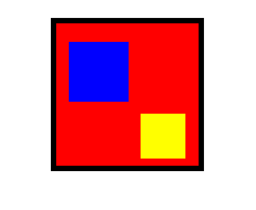
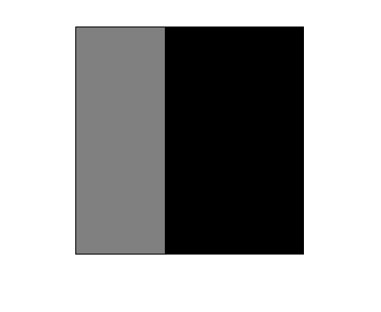
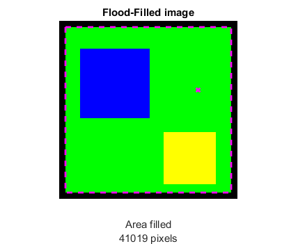
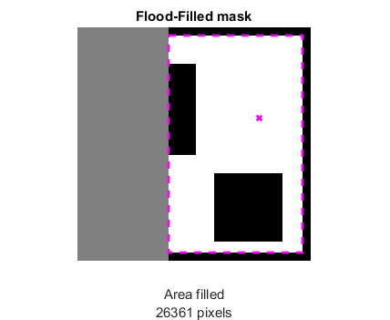
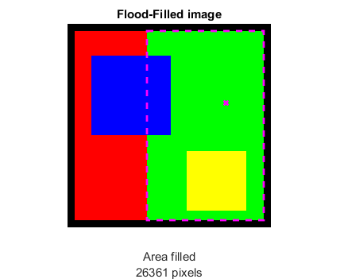

Flood-Fill demo
Demonstrates how to use cv.floodFill.
Contents
Input image and mask
some color image with defined connected components (as squares)
img = zeros([256,256,3],'uint8'); img(:,:,1) = 255; img = cv.rectangle(img, [0 0], [255 255], 'Thickness',15); img = cv.rectangle(img, [30 40 100 100], 'Thickness','Filled', 'Color',[0 0 255]); img = cv.rectangle(img, [150 160 75 75], 'Thickness','Filled', 'Color',[255 255 0]); imshow(img)
seed starting point
seed = [200 100];
mask: zeros allowed to change, non-zeros are not changed (must be 2 pixels taller/wider)
mask = zeros(size(img,1), size(img,2), 'uint8'); mask(:,1:100) = 128; mask = cv.copyMakeBorder(mask, [1 1 1 1], 'BorderType','Constant', 'Value',0); imshow(mask)
Alternative images
if false img = imread(fullfile(mexopencv.root(),'test','pic3.png')); seed = [200 200]; mask = zeros(size(img,1)+2, size(img,2)+2, 'uint8'); mask(:,290:end) = 128; elseif false img = imread(fullfile(mexopencv.root(),'test','pic5.png')); seed = [300 200]; mask = zeros(size(img,1)+2, size(img,2)+2, 'uint8'); mask(230:end,:) = 128; end
Flood-Filling without masking
we specify 8-connectivity, a floating range, and max lower/uppder diffs
[out,r1,a1] = cv.floodFill(img, seed, [0 255 0], ... 'Connectivity',8, 'FixedRange',false, ... 'LoDiff',[0 0 0]+0, 'UpDiff',[0 0 0]+0);
show output image, along with seed point and bounding box
imshow(out), title('Flood-Filled image') line(seed(1), seed(2), 'Color','m', 'Marker','x', ... 'LineStyle','none', 'LineWidth',2) rectangle('Position',r1+[0.5 0.5 0 0], 'EdgeColor','m', ... 'LineStyle','--', 'LineWidth',2); xlabel(sprintf('Area filled\n%d pixels',a1))
Flood-Filling with masking
we fill both image and mask, and update mask with a fill value of 255
[out2,r2,a2,mask2] = cv.floodFill(img, seed, [0 255 0], ... 'Mask',mask, 'MaskOnly',false, 'MaskFillValue',255); % trim padded border mask2 = mask2(2:end-1,2:end-1);
show updated mask, along with seed point and bounding box
imshow(mask2), title('Flood-Filled mask') line(seed(1), seed(2), 'Color','m', 'Marker','x', ... 'LineStyle','none', 'LineWidth',2) rectangle('Position',r2+[0.5 0.5 0 0], 'EdgeColor','m', ... 'LineStyle','--', 'LineWidth',2); xlabel(sprintf('Area filled\n%d pixels',a2))
show filled image, along with seed point and bounding box
imshow(out2), title('Flood-Filled image') line(seed(1), seed(2), 'Color','m', 'Marker','x', ... 'LineStyle','none', 'LineWidth',2) rectangle('Position',r2+[0.5 0.5 0 0], 'EdgeColor','m', ... 'LineStyle','--', 'LineWidth',2); xlabel(sprintf('Area filled\n%d pixels',a2))